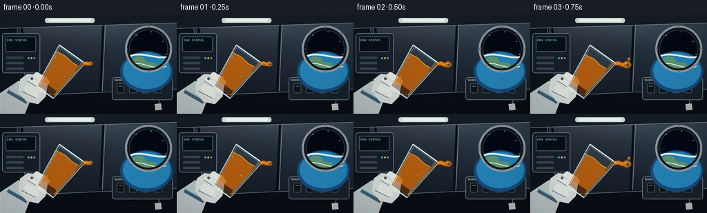
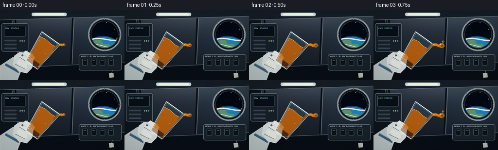
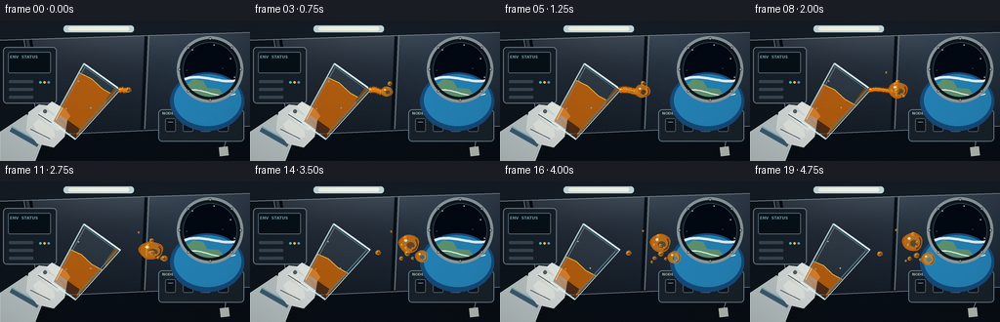
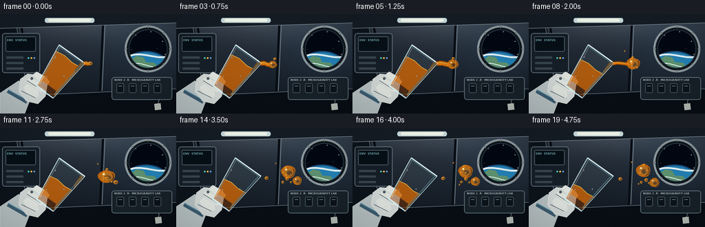

CODING AGENTS AS PIXEL WORLD MODELS
traex/GPT-5.6-Sol · mechanics_0007
点击播放 · 原生 RGB 像素
逐轮保存的候选
回放视频、检查图与代码变化。
每份候选均可单独播放。实际图片检查记录在下方工具轨迹中。
候选 01播放与检查图
点击播放 · 原生 RGB 像素


展开代码变化
--- 上一保存版本
+++ 本次保存版本
@@ -0,0 +1,256 @@
+from pathlib import Path
+import math, json
+import numpy as np
+from PIL import Image, ImageDraw, ImageFont, ImageFilter
+import artifact_io
+
+CASE_DIR = Path(__file__).resolve().parent
+SPEC = json.loads((CASE_DIR / 'task_spec.json').read_text())
+W, H, N = SPEC['width'], SPEC['height'], SPEC['frames']
+S = 4
+
+def sc(v): return int(round(v*S))
+def pts(seq): return [(sc(x), sc(y)) for x,y in seq]
+def rgba_layer(): return Image.new('RGBA', (W*S,H*S), (0,0,0,0))
+
+def font(size, bold=False):
+ p = '/usr/share/fonts/truetype/dejavu/DejaVuSans' + ('-Bold' if bold else '') + '.ttf'
+ try: return ImageFont.truetype(p, sc(size))
+ except: return ImageFont.load_default()
+
+def cubic(p0,p1,p2,p3,n=30):
+ out=[]
+ for u in np.linspace(0,1,n):
+ v=1-u
+ out.append((v**3*p0[0]+3*v*v*u*p1[0]+3*v*u*u*p2[0]+u**3*p3[0],
+ v**3*p0[1]+3*v*v*u*p1[1]+3*v*u*u*p2[1]+u**3*p3[1]))
+ return out
+
+def ellipse(draw, box, **kw): draw.ellipse(tuple(sc(x) for x in box), **kw)
+def line(draw, xy, fill, width, **kw): draw.line(pts(xy), fill=fill, width=max(1,sc(width)), **kw)
+def polygon(draw, xy, **kw): draw.polygon(pts(xy), **kw)
+def rounded(draw, box, radius, **kw): draw.rounded_rectangle(tuple(sc(x) for x in box), radius=sc(radius), **kw)
+
+def background(frame):
+ # cool metallic cabin wall, softly illuminated from above
+ yy,xx=np.mgrid[0:H*S,0:W*S]
+ top=np.array([42,51,62.],float); bot=np.array([15,22,31.],float)
+ f=(yy/(H*S))[:,:,None]
+ a=top*(1-f)+bot*f
+ # overhead lamp and porthole-adjacent glow
+ glow=np.exp(-(((xx-126*S)/(112*S))**2+((yy-4*S)/(31*S))**2))[:,:,None]
+ side=np.exp(-(((xx-216*S)/(67*S))**2+((yy-52*S)/(53*S))**2))[:,:,None]
+ a += glow*np.array([27,29,30.]) + side*np.array([5,10,14.])
+ a=np.clip(a,0,255).astype(np.uint8)
+ img=Image.fromarray(a,'RGB').convert('RGBA')
+ d=ImageDraw.Draw(img,'RGBA')
+ # structural perspective ribs / wall panels
+ polygon(d, [(0,0),(23,0),(47,144),(0,144)], fill=(13,20,27,220))
+ line(d,[(21,0),(45,144)],(103,122,136,100),1)
+ line(d,[(28,0),(51,144)],(5,9,14,180),3)
+ polygon(d,[(0,119),(256,108),(256,144),(0,144)],fill=(8,14,21,170))
+ line(d,[(0,119),(256,108)],(104,121,132,90),1)
+ line(d,[(150,0),(145,112)],(9,14,20,210),3)
+ line(d,[(153,0),(148,111)],(115,132,140,75),1)
+ # ceiling rails
+ polygon(d,[(0,0),(256,0),(256,12),(0,20)],fill=(21,29,38,240))
+ line(d,[(0,20),(256,12)],(125,142,151,100),1)
+ rounded(d,(65,5,137,12),3,fill=(204,223,224,230))
+ rounded(d,(70,6.2,132,10.3),2,fill=(248,253,238,245))
+ # left instrument panel
+ rounded(d,(3,27,58,85),4,fill=(22,31,40,245),outline=(105,122,134,130),width=sc(1))
+ rounded(d,(8,32,52,54),2,fill=(7,16,23,255),outline=(80,99,110,150),width=sc(1))
+ for y in [61,69,77]:
+ rounded(d,(9,y,34,y+3),1,fill=(57,70,79,240))
+ for k,c in enumerate([(73,195,174,255),(238,181,70,255),(94,147,204,255)]):
+ ellipse(d,(40+k*4.2,62,42.5+k*4.2,64.5),fill=c)
+ # small right-side utility module
+ rounded(d,(162,91,250,124),4,fill=(24,33,41,230),outline=(101,119,130,110),width=sc(1))
+ for x in [169,187,205,223]:
+ rounded(d,(x,100,x+11,114),2,fill=(12,19,25,245),outline=(70,87,98,150),width=sc(1))
+ line(d,[(x+3,104),(x+8,104)],(131,157,165,170),.7)
+ # labels
+ d.text((sc(166),sc(93)), 'NODE 2 · MICROGRAVITY LAB', font=font(3.8,True), fill=(168,185,190,180))
+ d.text((sc(10),sc(35)), 'ENV STATUS', font=font(4,True), fill=(112,164,174,210))
+ # porthole assembly (on top of wall, behind liquid)
+ ellipse(d,(181,16,249,84),fill=(8,13,19,255),outline=(131,146,153,230),width=sc(4))
+ ellipse(d,(186,21,244,79),fill=(2,8,18,255),outline=(42,61,74,255),width=sc(2))
+ # stars clipped conceptually inside; all chosen inside inner circle
+ for x,y,r in [(197,30,.5),(219,25,.4),(236,39,.6),(191,51,.35),(228,49,.35),(240,58,.4)]:
+ ellipse(d,(x-r,y-r,x+r,y+r),fill=(220,236,249,210))
+ # Earth limb in window
+ ellipse(d,(174,53,250,113),fill=(22,74,121,255))
+ ellipse(d,(178,55,247,108),fill=(36,129,180,255))
+ # cloud and continent fragments
+ polygon(d,[(190,66),(198,60),(208,62),(212,69),(224,70),(230,77),(213,83),(197,79)],fill=(94,146,112,220))
+ line(d,cubic((187,61),(203,52),(227,66),(243,61)),(225,241,244,215),2.7)
+ line(d,cubic((191,72),(207,67),(221,82),(241,75)),(239,247,245,180),1.2)
+ # re-mask porthole rim over Earth overspill
+ # cover outside approximated by robust ring stroke
+ ellipse(d,(183,18,247,82),outline=(16,23,29,255),width=sc(4))
+ ellipse(d,(181,16,249,84),outline=(142,154,159,245),width=sc(3))
+ # bolts
+ for ang in range(0,360,45):
+ x=215+31.5*math.cos(math.radians(ang)); y=50+31.5*math.sin(math.radians(ang))
+ ellipse(d,(x-1.2,y-1.2,x+1.2,y+1.2),fill=(177,185,184,255),outline=(48,57,62,255),width=sc(.4))
+ # drifting tiny fabric tag at bottom-right (microgravity cue)
+ tagx=229+1.2*math.sin(frame*.21)
+ line(d,[(231,124),(tagx,131)],(142,155,159,180),.7)
+ polygon(d,[(tagx-5,130),(tagx+4,129),(tagx+5,138),(tagx-4,139)],fill=(180,187,180,150),outline=(223,228,215,150))
+ return img
+
+# Glass local coordinate transform. +v points from mouth toward bottom.
+def gp(x,v,dx=0,dy=0):
+ M=(104.5+dx,57+dy); cross=(.815,.58); axis=(-.58,.815)
+ return (M[0]+cross[0]*x+axis[0]*v, M[1]+cross[1]*x+axis[1]*v)
+
+def draw_hand(base, dx,dy):
+ lay=rgba_layer(); d=ImageDraw.Draw(lay,'RGBA')
+ # suit cuff and blue retaining band
+ polygon(d,[(0,114),(27,96),(48,113),(36,144),(0,144)],fill=(183,193,194,255),outline=(230,237,234,255))
+ line(d,[(11,111),(39,127)],(60,92,112,255),6)
+ line(d,[(12,109),(41,125)],(126,171,187,255),1.3)
+ # glove palm
+ polygon(d,[(29,94),(40,86),(56,88),(69,101),(66,119),(55,130),(38,126),(27,112)],fill=(208,215,213,255),outline=(245,247,239,255))
+ # grip fingers curling around glass
+ for poly in [
+ [(47,88),(53,83),(67,91),(72,98),(67,104),(58,98)],
+ [(38,96),(44,91),(61,101),(65,108),(59,113),(48,105)],
+ [(34,106),(40,101),(55,111),(56,119),(49,122),(38,115)]]:
+ polygon(d,poly,fill=(224,228,223,255),outline=(248,250,243,230))
+ # seams/shadows
+ line(d,[(31,111),(43,117),(51,121)],(111,126,130,180),1)
+ line(d,[(39,96),(50,103),(59,109)],(120,136,139,150),.8)
+ ellipse(d,(44,91,48,95),fill=(148,159,160,120))
+ base.alpha_composite(lay)
+
+def juice_glob(base,cx,cy,rx,ry,phase=0,alpha=255):
+ # amber volume with irregular surface, dark refraction rim, and specular highlights
+ lay=rgba_layer(); d=ImageDraw.Draw(lay,'RGBA')
+ ring=[]
+ for k in range(48):
+ a=2*math.pi*k/48
+ wob=1+.035*math.sin(3*a+phase)+.022*math.sin(5*a-phase*.7)
+ ring.append((cx+rx*wob*math.cos(a),cy+ry*wob*math.sin(a)))
+ polygon(d,ring,fill=(174,84,9,alpha),outline=(247,177,42,min(alpha,245)))
+ # translucent inner volume
+ ellipse(d,(cx-rx*.88,cy-ry*.88,cx+rx*.88,cy+ry*.88),fill=(225,119,13,int(alpha*.82)))
+ ellipse(d,(cx-rx*.66,cy-ry*.65,cx+rx*.72,cy+ry*.73),fill=(244,142,20,int(alpha*.68)))
+ # warm core offset away from highlight
+ ellipse(d,(cx-rx*.22,cy-ry*.18,cx+rx*.54,cy+ry*.53),fill=(244,126,8,int(alpha*.32)))
+ # rim shadow lower right
+ line(d,cubic((cx+rx*.64,cy-ry*.45),(cx+rx*.96,cy-ry*.05),(cx+rx*.85,cy+ry*.55),(cx+rx*.34,cy+ry*.78),16),
+ (120,54,4,int(alpha*.48)),max(.55,rx*.10))
+ # sharp wet highlights
+ ellipse(d,(cx-rx*.48,cy-ry*.53,cx-rx*.17,cy-ry*.22),fill=(255,231,149,int(alpha*.88)))
+ ellipse(d,(cx-rx*.38,cy-ry*.46,cx-rx*.26,cy-ry*.33),fill=(255,255,224,min(alpha,245)))
+ ellipse(d,(cx+rx*.28,cy+ry*.39,cx+rx*.43,cy+ry*.53),fill=(255,190,66,int(alpha*.65)))
+ base.alpha_composite(lay)
+
+def draw_glass_and_juice(base, frame, dx,dy):
+ # hand is behind vessel
+ draw_hand(base,dx,dy)
+ lay=rgba_layer(); d=ImageDraw.Draw(lay,'RGBA')
+ outline=[gp(-23,0,dx,dy),gp(23,0,dx,dy),gp(15,68,dx,dy),gp(-15,68,dx,dy)]
+ # subtle transparent glass body
+ polygon(d,outline,fill=(176,216,225,24))
+ # juice remaining: receding from the mouth toward bottom over time
+ level=9.0 + 1.72*frame
+ # slight curved free surface and narrowing vessel walls
+ wl=23-(23-15)*(level/68)
+ surf=[gp(-wl+1,level+1.2,dx,dy), gp(-wl*.35,level-1.0,dx,dy),gp(wl*.35,level+.9,dx,dy),gp(wl-1,level-.5,dx,dy)]
+ liquid=surf+[gp(14,66,dx,dy),gp(-14,66,dx,dy)]
+ polygon(d,liquid,fill=(205,103,9,210),outline=(247,164,37,215))
+ # depth gradient bands inside juice
+ lower=[gp(-12,57,dx,dy),gp(12,57,dx,dy),gp(14,66,dx,dy),gp(-14,66,dx,dy)]
+ polygon(d,lower,fill=(137,59,4,120))
+ line(d,surf,(255,193,70,230),1.1)
+ # clinging film near pouring rim
+ if frame < 12:
+ film=[gp(17,1,dx,dy),gp(22,1,dx,dy),gp(21,20+frame*.35,dx,dy),gp(17,17+frame*.3,dx,dy)]
+ polygon(d,film,fill=(225,123,12,110))
+ # glass edges, double rim, base thickness
+ line(d,[outline[0],outline[3],outline[2],outline[1]],(207,237,242,210),1.25,joint='curve')
+ line(d,[gp(-20,3,dx,dy),gp(-13,63,dx,dy)],(255,255,255,105),.65)
+ line(d,[gp(20,3,dx,dy),gp(13,63,dx,dy)],(125,194,211,150),.8)
+ line(d,[gp(-15,68,dx,dy),gp(15,68,dx,dy)],(222,245,245,220),2.1)
+ # elliptical/open mouth represented by offset arcs/lines
+ line(d,[gp(-23,0,dx,dy),gp(23,0,dx,dy)],(226,248,250,245),2.0)
+ line(d,[gp(-22,2.2,dx,dy),gp(22,2.2,dx,dy)],(103,168,188,155),.8)
+ # highlights and condensation flecks
+ for x,v in [(-17,18),(-11,48),(9,33)]:
+ px,py=gp(x,v,dx,dy); ellipse(d,(px-.7,py-.7,px+.7,py+.7),fill=(247,255,252,145))
+ base.alpha_composite(lay)
+
+def draw_stream_and_drops(base, frame, dx,dy):
+ lay=rgba_layer(); d=ImageDraw.Draw(lay,'RGBA')
+ lip=gp(23,1,dx,dy)
+ t=frame
+ # Main stream/body. It starts as a bulge, lengthens, then capillary pinch-off.
+ if t <= 10:
+ if t <= 6:
+ cx=lip[0]+8.5+2.8*t; cy=lip[1]-.5+0.15*t+1.2*math.sin(t*.55)
+ r=3.1+.95*t
+ width=4.6+0.25*t
+ else:
+ cx=lip[0]+26+1.15*(t-6); cy=lip[1]+.4+1.0*math.sin(t*.45)
+ r=8.7+.28*(t-6)
+ width=max(1.25,5.8-1.1*(t-6))
+ path=cubic((lip[0]-1,lip[1]),(lip[0]+8,lip[1]-3),(cx-9,cy+2),(cx-r*.65,cy),34)
+ line(d,path,(121,53,4,245),width+2.0)
+ line(d,path,(226,117,10,255),width)
+ line(d,[(x,y-0.8) for x,y in path],(255,185,50,190),max(.7,width*.27))
+ base.alpha_composite(lay)
+ # draw globules separately for layered volume
+ if t <= 6:
+ cx=lip[0]+8.5+2.8*t; cy=lip[1]-.5+.15*t+1.2*math.sin(t*.55); r=3.1+.95*t
+ juice_glob(base,cx,cy,r,r*.83,t*.28)
+ elif t <= 11:
+ cx=lip[0]+26+1.15*(t-6); cy=lip[1]+.4+1.0*math.sin(t*.45); r=8.7+.28*(t-6)
+ # elongating orb preparing to divide
+ juice_glob(base,cx,cy,r*(1+.055*(t-7)),r*.88,t*.3)
+ if t>=9:
+ juice_glob(base,cx+9+(t-9)*2.2,cy+5+(t-9)*1.6,2.2+(t-9)*.7,2.0+(t-9)*.4,t)
+ else:
+ age=t-11
+ # two daughter spheres slowly drift apart in microgravity
+ juice_glob(base,160.5+.72*age,64.8-.38*age,10.2,9.2,t*.24)
+ juice_glob(base,171.5+1.35*age,75.0+.52*age,6.1+.10*age,5.8+.08*age,t*.31)
+ # residual bead just beyond the rim
+ juice_glob(base,lip[0]+7.5+.40*age,lip[1]+1.0+.28*age,2.7,2.35,t*.4)
+ # Satellites: emitted at distinct times and moving inertially rather than falling
+ emissions=[(3,2.2,-.55,1.55),(6,2.7,.62,1.95),(9,1.55,-1.05,2.30),(12,2.0,.18,1.75),(15,1.25,-.35,1.4)]
+ for j,(birth,rad,vy,vx) in enumerate(emissions):
+ if t>=birth:
+ age=t-birth
+ x=lip[0]+20+j*3+vx*age
+ y=lip[1]-7+j*5+vy*age+1.2*math.sin(.3*age+j)
+ juice_glob(base,x,y,rad,rad*(.9+0.06*math.sin(age)),j+t*.2)
+ # tiny spray after pinch-off, clearly spherical
+ if t>=8:
+ for j in range(3):
+ age=t-8
+ x=139+j*9+(1.0+j*.32)*age+dx
+ y=53+j*12+(-.25+j*.28)*age+dy
+ juice_glob(base,x,y,1.05+j*.22,1.0+j*.18,t+j)
+
+def frame_image(i):
+ # slight natural hand drift but stationary camera
+ dx=.55*math.sin(i*.27); dy=.42*math.sin(i*.21+1.0)
+ img=background(i)
+ # liquid behind and in front configured so hand/glass remains readable; stream exits lip over glass
+ draw_glass_and_juice(img,i,dx,dy)
+ draw_stream_and_drops(img,i,dx,dy)
+ # subtle foreground vignette and cabin-light sheen
+ arr=np.asarray(img.convert('RGB').resize((W,H),Image.Resampling.LANCZOS)).astype(np.float32)
+ yy,xx=np.mgrid[0:H,0:W]
+ vign=1-.13*np.clip(((xx-W/2)/(W*.72))**2+((yy-H/2)/(H*.72))**2,0,1)
+ arr*=vign[:,:,None]
+ # deterministic, extremely subtle sensor texture
+ rng=np.random.default_rng(8471+i)
+ arr += rng.normal(0,.42,arr.shape[:2])[:,:,None]
+ return np.clip(arr,0,255).astype(np.uint8)
+
+frames=np.stack([frame_image(i) for i in range(N)],axis=0)
+artifact_io.save(frames, CASE_DIR)
+print(f'Saved {frames.shape} RGB animation to {CASE_DIR}')
候选 02播放与检查图
点击播放 · 原生 RGB 像素


展开代码变化
--- 上一保存版本
+++ 本次保存版本
@@ -72,21 +72,23 @@
# labels
d.text((sc(166),sc(93)), 'NODE 2 · MICROGRAVITY LAB', font=font(3.8,True), fill=(168,185,190,180))
d.text((sc(10),sc(35)), 'ENV STATUS', font=font(4,True), fill=(112,164,174,210))
- # porthole assembly (on top of wall, behind liquid)
+ # Porthole assembly. Compose the exterior on a separate layer and clip it
+ # to the circular pane so Earth's limb cannot spill onto the cabin wall.
ellipse(d,(181,16,249,84),fill=(8,13,19,255),outline=(131,146,153,230),width=sc(4))
- ellipse(d,(186,21,244,79),fill=(2,8,18,255),outline=(42,61,74,255),width=sc(2))
- # stars clipped conceptually inside; all chosen inside inner circle
+ win=rgba_layer(); wd=ImageDraw.Draw(win,'RGBA')
+ wd.rectangle((0,0,W*S,H*S),fill=(2,8,18,255))
for x,y,r in [(197,30,.5),(219,25,.4),(236,39,.6),(191,51,.35),(228,49,.35),(240,58,.4)]:
- ellipse(d,(x-r,y-r,x+r,y+r),fill=(220,236,249,210))
- # Earth limb in window
- ellipse(d,(174,53,250,113),fill=(22,74,121,255))
- ellipse(d,(178,55,247,108),fill=(36,129,180,255))
- # cloud and continent fragments
- polygon(d,[(190,66),(198,60),(208,62),(212,69),(224,70),(230,77),(213,83),(197,79)],fill=(94,146,112,220))
- line(d,cubic((187,61),(203,52),(227,66),(243,61)),(225,241,244,215),2.7)
- line(d,cubic((191,72),(207,67),(221,82),(241,75)),(239,247,245,180),1.2)
- # re-mask porthole rim over Earth overspill
- # cover outside approximated by robust ring stroke
+ ellipse(wd,(x-r,y-r,x+r,y+r),fill=(220,236,249,210))
+ ellipse(wd,(174,53,250,113),fill=(22,74,121,255))
+ ellipse(wd,(178,55,247,108),fill=(36,129,180,255))
+ polygon(wd,[(190,66),(198,60),(208,62),(212,69),(224,70),(230,77),(213,83),(197,79)],fill=(94,146,112,220))
+ line(wd,cubic((187,61),(203,52),(227,66),(243,61)),(225,241,244,215),2.7)
+ line(wd,cubic((191,72),(207,67),(221,82),(241,75)),(239,247,245,180),1.2)
+ mask=Image.new('L',(W*S,H*S),0); md=ImageDraw.Draw(mask)
+ ellipse(md,(186,21,244,79),fill=255)
+ win.putalpha(mask); img.alpha_composite(win)
+ d=ImageDraw.Draw(img,'RGBA')
+ ellipse(d,(186,21,244,79),outline=(42,61,74,255),width=sc(2))
ellipse(d,(183,18,247,82),outline=(16,23,29,255),width=sc(4))
ellipse(d,(181,16,249,84),outline=(142,154,159,245),width=sc(3))
# bolts
可观测工具轨迹
实际执行的命令与返回图片。
命令 1exit 0
/bin/bash -lc "cat prompt.txt && printf '\\n---GENERATION_RULES---\\n' && cat GENERATION_RULES.md && printf '\\n---TASK_SPEC---\\n' && cat task_spec.json"
命令 2exit 0
/bin/bash -lc "find . -maxdepth 2 -type f -printf '%p %s bytes\\n' | sort && printf '\\nTOOLS\\n' && command -v ffmpeg && command -v python3 && command -v blender || true"
命令 3exit 0
/bin/bash -lc "sed -n '1,240p' artifact_io.py"
命令 4exit 0
/bin/bash -lc "python3 - <<'PY' import importlib.util for m in ['numpy','PIL','cv2','imageio']: print(m, bool(importlib.util.find_spec(m))) PY"
命令 5exit 0
/bin/bash -lc "cat > generate.py <<'PY'
from pathlib import Path
import math, json
import numpy as np
from PIL import Image, ImageDraw, ImageFont, ImageFilter
import artifact_io
CASE_DIR = Path(__file__).resolve().parent
SPEC = json.loads((CASE_DIR / 'task_spec.json').read_text())
W, H, N = SPEC['width'], SPEC['height'], SPEC['frames']
S = 4
def sc(v): return int(round(v*S))
def pts(seq): return [(sc(x), sc(y)) for x,y in seq]
def rgba_layer(): return Image.new('RGBA', (W*S,H*S), (0,0,0,0))
def font(size, bold=False):
p = '/usr/share/fonts/truetype/dejavu/DejaVuSans' + ('-Bold' if bold else '') + '.ttf'
try: return ImageFont.truetype(p, sc(size))
except: return ImageFont.load_default()
def cubic(p0,p1,p2,p3,n=30):
out=[]
for u in np.linspace(0,1,n):
v=1-u
out.append((v**3*p0[0]+3*v*v*u*p1[0]+3*v*u*u*p2[0]+u**3*p3[0],
v**3*p0[1]+3*v*v*u*p1[1]+3*v*u*u*p2[1]+u**3*p3[1]))
return out
def ellipse(draw, box, **kw): draw.ellipse(tuple(sc(x) for x in box), **kw)
def line(draw, xy, fill, width, **kw): draw.line(pts(xy), fill=fill, width=max(1,sc(width)), **kw)
def polygon(draw, xy, **kw): draw.polygon(pts(xy), **kw)
def rounded(draw, box, radius, **kw): draw.rounded_rectangle(tuple(sc(x) for x in box), radius=sc(radius), **kw)
def background(frame):
# cool metallic cabin wall, softly illuminated from above
yy,xx=np.mgrid[0:H*S,0:W*S]
top=np.array([42,51,62.],float); bot=np.array([15,22,31.],float)
f=(yy/(H*S))[:,:,None]
a=top*(1-f)+bot*f
# overhead lamp and porthole-adjacent glow
glow=np.exp(-(((xx-126*S)/(112*S))**2+((yy-4*S)/(31*S))**2))[:,:,None]
side=np.exp(-(((xx-216*S)/(67*S))**2+((yy-52*S)/(53*S))**2))[:,:,None]
a += glow*np.array([27,29,30.]) + side*np.array([5,10,14.])
a=np.clip(a,0,255).astype(np.uint8)
img=Image.fromarray(a,'RGB').convert('RGBA')
d=ImageDraw.Draw(img,'RGBA')
# structural perspective ribs / wall panels
polygon(d, [(0,0),(23,0),(47,144),(0,144)], fill=(13,20,27,220))
line(d,[(21,0),(45,144)],(103,122,136,100),1)
line(d,[(28,0),(51,144)],(5,9,14,180),3)
polygon(d,[(0,119),(256,108),(256,144),(0,144)],fill=(8,14,21,170))
line(d,[(0,119),(256,108)],(104,121,132,90),1)
line(d,[(150,0),(145,112)],(9,14,20,210),3)
line(d,[(153,0),(148,111)],(115,132,140,75),1)
# ceiling rails
polygon(d,[(0,0),(256,0),(256,12),(0,20)],fill=(21,29,38,240))
line(d,[(0,20),(256,12)],(125,142,151,100),1)
rounded(d,(65,5,137,12),3,fill=(204,223,224,230))
rounded(d,(70,6.2,132,10.3),2,fill=(248,253,238,245))
# left instrument panel
rounded(d,(3,27,58,85),4,fill=(22,31,40,245),outline=(105,122,134,130),width=sc(1))
rounded(d,(8,32,52,54),2,fill=(7,16,23,255),outline=(80,99,110,150),width=sc(1))
for y in [61,69,77]:
rounded(d,(9,y,34,y+3),1,fill=(57,70,79,240))
for k,c in enumerate([(73,195,174,255),(238,181,70,255),(94,147,204,255)]):
ellipse(d,(40+k*4.2,62,42.5+k*4.2,64.5),fill=c)
# small right-side utility module
rounded(d,(162,91,250,124),4,fill=(24,33,41,230),outline=(101,119,130,110),width=sc(1))
for x in [169,187,205,223]:
rounded(d,(x,100,x+11,114),2,fill=(12,19,25,245),outline=(70,87,98,150),width=sc(1))
line(d,[(x+3,104),(x+8,104)],(131,157,165,170),.7)
# labels
d.text((sc(166),sc(93)), 'NODE 2 · MICROGRAVITY LAB', font=font(3.8,True), fill=(168,185,190,180))
d.text((sc(10),sc(35)), 'ENV STATUS', font=font(4,True), fill=(112,164,174,210))
# porthole assembly (on top of wall, behind liquid)
ellipse(d,(181,16,249,84),fill=(8,13,19,255),outline=(131,146,153,230),width=sc(4))
ellipse(d,(186,21,244,79),fill=(2,8,18,255),outline=(42,61,74,255),width=sc(2))
# stars clipped conceptually inside; all chosen inside inner circle
for x,y,r in [(197,30,.5),(219,25,.4),(236,39,.6),(191,51,.35),(228,49,.35),(240,58,.4)]:
ellipse(d,(x-r,y-r,x+r,y+r),fill=(220,236,249,210))
# Earth limb in window
ellipse(d,(174,53,250,113),fill=(22,74,121,255))
ellipse(d,(178,55,247,108),fill=(36,129,180,255))
# cloud and continent fragments
polygon(d,[(190,66),(198,60),(208,62),(212,69),(224,70),(230,77),(213,83),(197,79)],fill=(94,146,112,220))
line(d,cubic((187,61),(203,52),(227,66),(243,61)),(225,241,244,215),2.7)
line(d,cubic((191,72),(207,67),(221,82),(241,75)),(239,247,245,180),1.2)
# re-mask porthole rim over Earth overspill
# cover outside approximated by robust ring stroke
ellipse(d,(183,18,247,82),outline=(16,23,29,255),width=sc(4))
ellipse(d,(181,16,249,84),outline=(142,154,159,245),width=sc(3))
# bolts
for ang in range(0,360,45):
x=215+31.5*math.cos(math.radians(ang)); y=50+31.5*math.sin(math.radians(ang))
ellipse(d,(x-1.2,y-1.2,x+1.2,y+1.2),fill=(177,185,184,255),outline=(48,57,62,255),width=sc(.4))
# drifting tiny fabric tag at bottom-right (microgravity cue)
tagx=229+1.2*math.sin(frame*.21)
line(d,[(231,124),(tagx,131)],(142,155,159,180),.7)
polygon(d,[(tagx-5,130),(tagx+4,129),(tagx+5,138),(tagx-4,139)],fill=(180,187,180,150),outline=(223,228,215,150))
return img
# Glass local coordinate transform. +v points from mouth toward bottom.
def gp(x,v,dx=0,dy=0):
M=(104.5+dx,57+dy); cross=(.815,.58); axis=(-.58,.815)
return (M[0]+cross[0]*x+axis[0]*v, M[1]+cross[1]*x+axis[1]*v)
def draw_hand(base, dx,dy):
lay=rgba_layer(); d=ImageDraw.Draw(lay,'RGBA')
# suit cuff and blue retaining band
polygon(d,[(0,114),(27,96),(48,113),(36,144),(0,144)],fill=(183,193,194,255),outline=(230,237,234,255))
line(d,[(11,111),(39,127)],(60,92,112,255),6)
line(d,[(12,109),(41,125)],(126,171,187,255),1.3)
# glove palm
polygon(d,[(29,94),(40,86),(56,88),(69,101),(66,119),(55,130),(38,126),(27,112)],fill=(208,215,213,255),outline=(245,247,239,255))
# grip fingers curling around glass
for poly in [
[(47,88),(53,83),(67,91),(72,98),(67,104),(58,98)],
[(38,96),(44,91),(61,101),(65,108),(59,113),(48,105)],
[(34,106),(40,101),(55,111),(56,119),(49,122),(38,115)]]:
polygon(d,poly,fill=(224,228,223,255),outline=(248,250,243,230))
# seams/shadows
line(d,[(31,111),(43,117),(51,121)],(111,126,130,180),1)
line(d,[(39,96),(50,103),(59,109)],(120,136,139,150),.8)
ellipse(d,(44,91,48,95),fill=(148,159,160,120))
base.alpha_composite(lay)
def juice_glob(base,cx,cy,rx,ry,phase=0,alpha=255):
# amber volume with irregular surface, dark refraction rim, and specular highlights
lay=rgba_layer(); d=ImageDraw.Draw(lay,'RGBA')
ring=[]
for k in range(48):
a=2*math.pi*k/48
wob=1+.035*math.sin(3*a+phase)+.022*math.sin(5*a-phase*.7)
ring.append((cx+rx*wob*math.cos(a),cy+ry*wob*math.sin(a)))
polygon(d,ring,fill=(174,84,9,alpha),outline=(247,177,42,min(alpha,245)))
# translucent inner volume
ellipse(d,(cx-rx*.88,cy-ry*.88,cx+rx*.88,cy+ry*.88),fill=(225,119,13,int(alpha*.82)))
ellipse(d,(cx-rx*.66,cy-ry*.65,cx+rx*.72,cy+ry*.73),fill=(244,142,20,int(alpha*.68)))
# warm core offset away from highlight
ellipse(d,(cx-rx*.22,cy-ry*.18,cx+rx*.54,cy+ry*.53),fill=(244,126,8,int(alpha*.32)))
# rim shadow lower right
line(d,cubic((cx+rx*.64,cy-ry*.45),(cx+rx*.96,cy-ry*.05),(cx+rx*.85,cy+ry*.55),(cx+rx*.34,cy+ry*.78),16),
(120,54,4,int(alpha*.48)),max(.55,rx*.10))
# sharp wet highlights
ellipse(d,(cx-rx*.48,cy-ry*.53,cx-rx*.17,cy-ry*.22),fill=(255,231,149,int(alpha*.88)))
ellipse(d,(cx-rx*.38,cy-ry*.46,cx-rx*.26,cy-ry*.33),fill=(255,255,224,min(alpha,245)))
ellipse(d,(cx+rx*.28,cy+ry*.39,cx+rx*.43,cy+ry*.53),fill=(255,190,66,int(alpha*.65)))
base.alpha_composite(lay)
def draw_glass_and_juice(base, frame, dx,dy):
# hand is behind vessel
draw_hand(base,dx,dy)
lay=rgba_layer(); d=ImageDraw.Draw(lay,'RGBA')
outline=[gp(-23,0,dx,dy),gp(23,0,dx,dy),gp(15,68,dx,dy),gp(-15,68,dx,dy)]
# subtle transparent glass body
polygon(d,outline,fill=(176,216,225,24))
# juice remaining: receding from the mouth toward bottom over time
level=9.0 + 1.72*frame
# slight curved free surface and narrowing vessel walls
wl=23-(23-15)*(level/68)
surf=[gp(-wl+1,level+1.2,dx,dy), gp(-wl*.35,level-1.0,dx,dy),gp(wl*.35,level+.9,dx,dy),gp(wl-1,level-.5,dx,dy)]
liquid=surf+[gp(14,66,dx,dy),gp(-14,66,dx,dy)]
polygon(d,liquid,fill=(205,103,9,210),outline=(247,164,37,215))
# depth gradient bands inside juice
lower=[gp(-12,57,dx,dy),gp(12,57,dx,dy),gp(14,66,dx,dy),gp(-14,66,dx,dy)]
polygon(d,lower,fill=(137,59,4,120))
line(d,surf,(255,193,70,230),1.1)
# clinging film near pouring rim
if frame < 12:
film=[gp(17,1,dx,dy),gp(22,1,dx,dy),gp(21,20+frame*.35,dx,dy),gp(17,17+frame*.3,dx,dy)]
polygon(d,film,fill=(225,123,12,110))
# glass edges, double rim, base thickness
line(d,[outline[0],outline[3],outline[2],outline[1]],(207,237,242,210),1.25,joint='curve')
line(d,[gp(-20,3,dx,dy),gp(-13,63,dx,dy)],(255,255,255,105),.65)
line(d,[gp(20,3,dx,dy),gp(13,63,dx,dy)],(125,194,211,150),.8)
line(d,[gp(-15,68,dx,dy),gp(15,68,dx,dy)],(222,245,245,220),2.1)
# elliptical/open mouth represented by offset arcs/lines
line(d,[gp(-23,0,dx,dy),gp(23,0,dx,dy)],(226,248,250,245),2.0)
line(d,[gp(-22,2.2,dx,dy),gp(22,2.2,dx,dy)],(103,168,188,155),.8)
# highlights and condensation flecks
for x,v in [(-17,18),(-11,48),(9,33)]:
px,py=gp(x,v,dx,dy); ellipse(d,(px-.7,py-.7,px+.7,py+.7),fill=(247,255,252,145))
base.alpha_composite(lay)
def draw_stream_and_drops(base, frame, dx,dy):
lay=rgba_layer(); d=ImageDraw.Draw(lay,'RGBA')
lip=gp(23,1,dx,dy)
t=frame
# Main stream/body. It starts as a bulge, lengthens, then capillary pinch-off.
if t <= 10:
if t <= 6:
cx=lip[0]+8.5+2.8*t; cy=lip[1]-.5+0.15*t+1.2*math.sin(t*.55)
r=3.1+.95*t
width=4.6+0.25*t
else:
cx=lip[0]+26+1.15*(t-6); cy=lip[1]+.4+1.0*math.sin(t*.45)
r=8.7+.28*(t-6)
width=max(1.25,5.8-1.1*(t-6))
path=cubic((lip[0]-1,lip[1]),(lip[0]+8,lip[1]-3),(cx-9,cy+2),(cx-r*.65,cy),34)
line(d,path,(121,53,4,245),width+2.0)
line(d,path,(226,117,10,255),width)
line(d,[(x,y-0.8) for x,y in path],(255,185,50,190),max(.7,width*.27))
base.alpha_composite(lay)
# draw globules separately for layered volume
if t <= 6:
cx=lip[0]+8.5+2.8*t; cy=lip[1]-.5+.15*t+1.2*math.sin(t*.55); r=3.1+.95*t
juice_glob(base,cx,cy,r,r*.83,t*.28)
elif t <= 11:
cx=lip[0]+26+1.15*(t-6); cy=lip[1]+.4+1.0*math.sin(t*.45); r=8.7+.28*(t-6)
# elongating orb preparing to divide
juice_glob(base,cx,cy,r*(1+.055*(t-7)),r*.88,t*.3)
if t>=9:
juice_glob(base,cx+9+(t-9)*2.2,cy+5+(t-9)*1.6,2.2+(t-9)*.7,2.0+(t-9)*.4,t)
else:
age=t-11
# two daughter spheres slowly drift apart in microgravity
juice_glob(base,160.5+.72*age,64.8-.38*age,10.2,9.2,t*.24)
juice_glob(base,171.5+1.35*age,75.0+.52*age,6.1+.10*age,5.8+.08*age,t*.31)
# residual bead just beyond the rim
juice_glob(base,lip[0]+7.5+.40*age,lip[1]+1.0+.28*age,2.7,2.35,t*.4)
# Satellites: emitted at distinct times and moving inertially rather than falling
emissions=[(3,2.2,-.55,1.55),(6,2.7,.62,1.95),(9,1.55,-1.05,2.30),(12,2.0,.18,1.75),(15,1.25,-.35,1.4)]
for j,(birth,rad,vy,vx) in enumerate(emissions):
if t>=birth:
age=t-birth
x=lip[0]+20+j*3+vx*age
y=lip[1]-7+j*5+vy*age+1.2*math.sin(.3*age+j)
juice_glob(base,x,y,rad,rad*(.9+0.06*math.sin(age)),j+t*.2)
# tiny spray after pinch-off, clearly spherical
if t>=8:
for j in range(3):
age=t-8
x=139+j*9+(1.0+j*.32)*age+dx
y=53+j*12+(-.25+j*.28)*age+dy
juice_glob(base,x,y,1.05+j*.22,1.0+j*.18,t+j)
def frame_image(i):
# slight natural hand drift but stationary camera
dx=.55*math.sin(i*.27); dy=.42*math.sin(i*.21+1.0)
img=background(i)
# liquid behind and in front configured so hand/glass remains readable; stream exits lip over glass
draw_glass_and_juice(img,i,dx,dy)
draw_stream_and_drops(img,i,dx,dy)
# subtle foreground vignette and cabin-light sheen
arr=np.asarray(img.convert('RGB').resize((W,H),Image.Resampling.LANCZOS)).astype(np.float32)
yy,xx=np.mgrid[0:H,0:W]
vign=1-.13*np.clip(((xx-W/2)/(W*.72))**2+((yy-H/2)/(H*.72))**2,0,1)
arr*=vign[:,:,None]
# deterministic, extremely subtle sensor texture
rng=np.random.default_rng(8471+i)
arr += rng.normal(0,.42,arr.shape[:2])[:,:,None]
return np.clip(arr,0,255).astype(np.uint8)
frames=np.stack([frame_image(i) for i in range(N)],axis=0)
artifact_io.save(frames, CASE_DIR)
print(f'Saved {frames.shape} RGB animation to {CASE_DIR}')
PY
python3 generate.py"命令 6exit 0
/bin/bash -lc "sed -n '75,125p' generate.py"
命令 7exit 0
/bin/bash -lc "python3 generate.py && python3 - <<'PY'
from PIL import Image
import numpy as np, pathlib
p=pathlib.Path('.')
a=np.load('pixels.npz')['pixels']
files=sorted((p/'frames').glob('*.png'))
print('pixels:',a.shape,a.dtype,'PNG frames:',len(files))
for f in files:
im=Image.open(f)
assert im.mode=='RGB' and im.size==(256,144)
print('validated: 20 RGB frames at 256x144; artifact bundle complete')
PY"视觉工具实际返回图片 1

视觉工具实际返回图片 2

保存候选 2 份；完成命令 7 次；可验证图片返回 2 张。原始 API 响应与完整日志保留在本地。